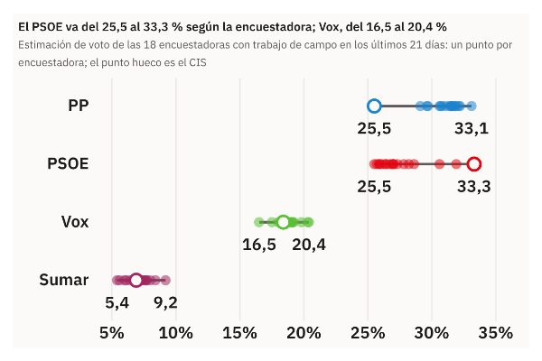
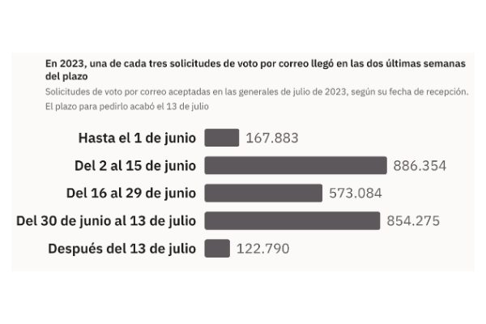

Actualidad · El debate · España
Encuestas y debate: tras el cara a cara de 2023, 10 de 14 encuestadoras ampliaron la ventaja del PP; trece días después ganó por 1,4 puntos
El debate de las elecciones generales del 29N es este jueves a las 22.00. En 2023, la media de las encuestas pasó de 5,1 a 6,0 puntos de ventaja para el PP tras el cara a cara; las urnas le dieron 1,4.
Por Nacho G. del Álamo ·
Cada párrafo lleva una etiqueta: dato (cifra comprobable con las fuentes), patrón (relación que se repite, sin afirmar la causa), hipótesis (explicación posible, sin dos fuentes independientes) o contexto (hechos y declaraciones publicados por otros, enlazados). Cómo verificamos
ContextoPedro Sánchez y Alberto Núñez Feijóo se verán en el cara a cara de las elecciones generales del 29N el jueves 19 de noviembre a las 22.00, en un debate organizado por la Academia de Televisión y moderado por su presidenta, María Casado, según elDiario.es. RTVE, Atresmedia, Mediaset y La Séptima lo emitirán, según la información de EFE que recoge Infobae. Quedarán diez días para votar.
ContextoEl último cara a cara entre los dos fue el 10 de julio de 2023, trece días antes de las elecciones. Lo vieron 5,9 millones de personas, según los datos de Barlovento Comunicación que publicaron El Debate y Europa Press: el cara a cara menos visto de los celebrados desde 1993.
DatoLas encuestas que se publicaron después se movieron hacia el PP. De las 14 empresas que publicaron encuesta antes y después del debate, 10 ampliaron la ventaja del PP sobre el PSOE y 4 la redujeron. La media de esas 14 pasó de 5,1 a 6,0 puntos: el PP subió 1,2 puntos de media y el PSOE, 0,3. El 23 de julio, el PP ganó por 1,4.
Ver la tabla
| Empresa | Antes (fecha) | PP menos PSOE antes | Después (fecha) | PP menos PSOE después | Cambio |
|---|---|---|---|---|---|
| CIS | 2023-07-05 | +0,2 | 2023-07-17 | −1,4 | −1,6 |
| IMOP Insights | 2023-07-10 | +5,2 | 2023-07-17 | +4,7 | −0,5 |
| Cluster17 | 2023-07-03 | +5,2 | 2023-07-17 | +4,7 | −0,5 |
| Data10 | 2023-07-10 | +8,9 | 2023-07-17 | +8,5 | −0,4 |
| SocioMétrica | 2023-07-09 | +4,8 | 2023-07-17 | +5,2 | +0,4 |
| NC Report | 2023-07-10 | +8,3 | 2023-07-17 | +8,9 | +0,6 |
| GAD3 | 2023-07-10 | +7,5 | 2023-07-17 | +8,3 | +0,8 |
| Invymark | 2023-07-09 | +6,3 | 2023-07-15 | +7,2 | +0,9 |
| YouGov | 2023-07-07 | +3,0 | 2023-07-17 | +4,0 | +1,0 |
| Sigma Dos | 2023-07-10 | +6,0 | 2023-07-17 | +7,4 | +1,4 |
| Target Point | 2023-07-09 | +6,7 | 2023-07-17 | +8,3 | +1,6 |
| Sondaxe | 2023-07-10 | +3,3 | 2023-07-17 | +5,6 | +2,3 |
| 40dB. | 2023-07-10 | +1,1 | 2023-07-16 | +4,2 | +3,1 |
| DYM | 2023-07-05 | +5,0 | 2023-07-16 | +8,4 | +3,4 |
Ver la tabla
| Momento | PP menos PSOE (puntos) |
|---|---|
| Antes del debate | 5,1 |
| Después del debate | 6,0 |
| Resultado del 23 de julio | 1,4 |
ContextoLas encuestas no dicen por qué se movieron, y no es seguro que fuera por el debate: hubo más campaña entre una encuesta y otra, y en las publicadas justo después parte del trabajo de campo pudo ser anterior al 10 de julio. Lo que sí se sabe es cómo acabó: las últimas encuestas de 2023 exageraron la ventaja del PP.
DatoCon los datos a las 16.59 del 17 de noviembre de 2026, la media de encuestas de nuestro modelo da al PP 3,0 puntos de ventaja sobre el PSOE antes del debate de este jueves.
Preguntas frecuentes
¿Las encuestas suelen moverse después de un cara a cara?
En 2023, sí: de las 14 empresas que publicaron antes y después del debate del 10 de julio, 10 cambiaron hacia el PP. Las encuestas no dicen si fue por el debate o por el resto de la campaña.
¿Qué pasó con las encuestas tras el debate de 2023?
De las 14 empresas que publicaron antes y después del cara a cara del 10 de julio, 10 ampliaron la ventaja del PP. La media pasó de 5,1 a 6,0 puntos; el PP ganó por 1,4.
Lo que las encuestas no dicen · Las encuestas de las elecciones generales del 29N
Método y fuentes
- Qué se compara
- La última encuesta nacional de cada empresa publicada antes del cara a cara del 10 de julio de 2023 y la última publicada después, hasta la veda, para las 14 empresas con encuesta en los dos tramos; el resultado del 23 de julio, y la media de encuestas de hoy.
- Límites
- Las encuestas no dicen por qué cambian: entre una y otra hubo más campaña, y en las publicadas justo después parte del campo pudo ser anterior al debate. Las encuestas de antes van del 26 de junio al 10 de julio, así que no todas son de la víspera. Solo las encuestas nacionales recopiladas por Electográfica.
- Cómo se calcula
- Ventaja del PP: PP menos PSOE en cada encuesta. Antes: última encuesta de cada empresa publicada del 26 de junio al 10 de julio de 2023; después: última del 11 al 17 de julio. El resultado sale igual si el después empieza el 13 de julio. Resultado con voto exterior, sobre votos válidos. Hoy: media del modelo de mapaelectoral.es/encuestas. Script: actualidad/src/resumenes/debate_cara_a_cara.py. Cifras reproducibles con los scripts del expediente de la pieza. Metodología de Actualidad · Metodología del Atlas
- Fuentes
- Ministerio del Interior, resultados electorales por mesa y voto CERA (municipio 999), vía pollspaindata
- Electográfica, encuestas de las generales de julio de 2023
- elDiario.es, el cara a cara entre Sánchez y Feijóo será el jueves 19 de noviembre, moderado por María Casado
- Infobae (EFE), RTVE, Atresmedia, Mediaset y La Séptima emitirán el cara a cara (16-11-2026)
- El Debate y Europa Press, audiencia del cara a cara de 2023 (11-7-2023)
- Mapa Electoral, método del modelo de escaños
- Autoría
- Nacho G. del Álamo
- Revisión de datos y texto
- Nacho G. del Álamo, 17 de noviembre de 2026
- Publicado · actualizado
- 17 de noviembre de 2026 · 17 de noviembre de 2026
- Correcciones
- Ninguna.
Serie «Camino al 29N»: 160 piezas
- El mapa electoral de Cantabria: sin el PRC en la papeleta, el PP pasó de 55 a 85 municipios y ganó El Astillero por 5 votos
- El mapa electoral de La Rioja: el PP pasó de 108 a 138 municipios y ganó Logroño por 6.822 votos; con las encuestas, Vox le quitaría un diputado al PSOE
- El mapa electoral de Ceuta y Melilla: Vox pasó de ganar 32 secciones de Ceuta a ninguna, y 13 de las 17 de Coalición por Melilla fueron al PSOE
- Los once municipios que visitan los candidatos el primer día de campaña, fuera de Madrid y Barcelona, cambiaron de ganador entre 2019 y 2023
- Dos de los cuatro del debate de laSexta no se presentan el 29N: ni Cuerpo ni Bustinduy están en ninguna lista
- El CIS da al PSOE más escaños que la media de encuestas en 13 provincias y menos en ninguna; en Madrid, entre 12 y 14 frente a 10
- A dos semanas del 29N, 14 de las 16 encuestas con escaños dan mayoría absoluta a PP y Vox; solo el CIS y SW Demoscopia ponen por delante al PSOE
- De los 25 convocados de De la Fuente nacidos en España, 15 nacieron donde ganó el PSOE en 2023 y 8 donde ganó el PP; en Puente Genil, el PP ganó por 31 votos
- Vox, primero en el CIS entre los de 18 a 24 años: la generación de 2008 estrena voto en unas generales
- El PSOE sube en siete de las nueve encuestas de la primera semana de campaña; el PP baja en cuatro y sube en otras cuatro
- Feijóo hace campaña con UPN en Pamplona, donde el PSOE ganó 77 de las 151 secciones en 2023; con UPN y PP sumados, se habría quedado en 49
- Al PP le faltaron 9.793 votos en 2023 para recuperar un diputado en Gipuzkoa; Feijóo arropa hoy a su candidato, atacado en Hernani
- En 2023, las últimas encuestas daban al PP 5,7 puntos de ventaja sobre el PSOE y ganó por 1,4: si hoy fallaran igual, el PSOE iría primero
- Si la abstención fuera un partido, en 2023 habría quedado por delante del ganador en más de la mitad de las grandes ciudades y en la mitad de las secciones de España
- Voto por correo para las elecciones generales del 29N: el plazo para pedirlo acaba el jueves 19; en 2023, una de cada tres solicitudes llegó en las dos últimas semanas
- Estás aquíEncuestas y debate: tras el cara a cara de 2023, 10 de 14 encuestadoras ampliaron la ventaja del PP; trece días después ganó por 1,4 puntos
- Elecciones generales: una de cada tres secciones cambió de ganador entre 2019 y 2023
- Elecciones generales: las encuestas dan al PSOE entre el 25,5 y el 33,3 %
- Elecciones generales: Vox baja al 17 % en la encuesta diaria de El País
- Encuestas elecciones generales 2026, hoy 18 de noviembre: el PSOE, a dos puntos o menos del PP
- Ver las 160 piezas de la serie
Más datos: elecciones generales del 29N de 2026: fecha y escaños por provincia · resultados de las elecciones generales 2026 (29N) y los de 2023 · dónde y cómo votar el 29N: colegio electoral, voto por correo y plazos.
Sigue leyendo
 Encuestas de hoyEncuestas elecciones generales 2026, hoy 18 de noviembre: el PSOE, a dos puntos o menos del PP
Encuestas de hoyEncuestas elecciones generales 2026, hoy 18 de noviembre: el PSOE, a dos puntos o menos del PP La encuesta de El PaísElecciones generales: Vox baja al 17 % en la encuesta diaria de El País
La encuesta de El PaísElecciones generales: Vox baja al 17 % en la encuesta diaria de El País
Lo que las encuestas no dicenElecciones generales: las encuestas dan al PSOE entre el 25,5 y el 33,3 % El mapa que nadie te enseñaElecciones generales: una de cada tres secciones cambió de ganador entre 2019 y 2023
El mapa que nadie te enseñaElecciones generales: una de cada tres secciones cambió de ganador entre 2019 y 2023
Voto por correoVoto por correo para las elecciones generales del 29N: el plazo para pedirlo acaba el jueves 19; en 2023, una de cada tres solicitudes llegó en las dos últimas semanas El mapa que nadie te enseñaSi la abstención fuera un partido, en 2023 habría quedado por delante del ganador en más de la mitad de las grandes ciudades y en la mitad de las secciones de España
El mapa que nadie te enseñaSi la abstención fuera un partido, en 2023 habría quedado por delante del ganador en más de la mitad de las grandes ciudades y en la mitad de las secciones de España